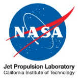

Work Experience
- Microsoft — Senior Research Scientist (2024–2025) Copilot, Copilot Vision, Windows Agent Arena, VideoWebArena, WinClick, and other agentic models/benchmarks.
-
 MIT CSAIL — Research Scientist (2023–2025)
Affiliated research
on AI + economics and supercomputing.
MIT CSAIL — Research Scientist (2023–2025)
Affiliated research
on AI + economics and supercomputing.
- SandboxAQ — AI Fellow in Residence (2023–2024) (spinoff from Google) AI for quantum chemistry & battery simulation; LLMs for security/cryptography; large quantitative models; agents for hypothesis generation and experiment design.
-
 AI for Scientific Research — AI Research Advisor (2022–2024)
Advised/volunteered on
applied research projects
(x-ray crystallography, imaging analysis, multi-modal sensor fusion) across multiple institutions.
AI for Scientific Research — AI Research Advisor (2022–2024)
Advised/volunteered on
applied research projects
(x-ray crystallography, imaging analysis, multi-modal sensor fusion) across multiple institutions.
- Twitter — Senior Applied Scientist (2022–2023) LLMs for social graph analysis; recommendation systems; viral post detection.
- Genentech — Visiting Researcher (2022–2023) AI for drug discovery; parallelization and GPU support for pharmacokinetic ODE solvers.
-  NASA Jet Propulsion Laboratory (JPL) — Visiting Researcher (2022–2023) Quantum computing applications.
-
 MIT Lincoln Laboratory — Member of Technical Staff, Senior Applied Scientist (2021–2022)
LLM inference energy benchmarking
,
GPU power capping at scale
.
MIT Lincoln Laboratory — Member of Technical Staff, Senior Applied Scientist (2021–2022)
LLM inference energy benchmarking
,
GPU power capping at scale
.
- Yale University — Graduate Student & Researcher (2018–2020) Behavioral economics, mechanism design, market design, causal inference.
- BlackRock — Senior Associate, Markets & Analytics (2017–2018) Financial Markets Advisory (FMA).
-
Deutsche Bank — Associate (2015–2017) Risk Methodology & Risk Analytics.
-
 Federal Reserve Bank of Boston — Strategy & Operations Associate (2014–2015)
Macroeconomic forecasting, bank stress test design, alternative data and model forecasts.
Federal Reserve Bank of Boston — Strategy & Operations Associate (2014–2015)
Macroeconomic forecasting, bank stress test design, alternative data and model forecasts.
Selected Publications


Full list: Google Scholar
Education
- New York University — MS, Computer Science Concentration in artificial intelligence.
- Yale University — PhD, Economics ABD (incomplete).
- University of Oxford — Philosophy, Politics, Economics First Class with Honors · Visiting Scholar.
- Williams College — BA, Economics Magna Cum Laude · Phi Beta Kappa · Founder, Law Society
Media Coverage & Presentations
-
“We automated 150 tasks with AI Agents, just copy us” — Microsoft AI
In-depth discussion of how large language model agents are used to automate real-world Windows workflows, including design decisions, failure modes, and deployment lessons.
-
Scaling Laws: AI and Energy — What do we know? What are we learning?
Conversation on empirical evidence around AI energy consumption, scaling behavior, and how measurement-driven approaches can inform more sustainable AI systems.
-
Windows Agent Arena — Featured on Microsoft Project Page
Overview of a large-scale, open benchmarking framework for evaluating multimodal AI agents that reason, plan, and act within a real Windows OS environment.
-
Japanese Press Coverage — Windows Agent Arena (Mynavi Tech+)
Japanese technology press coverage highlighting the motivation, technical design, and broader implications of Windows Agent Arena for agent-based AI research.
-
Copilot Vision — Featured on Microsoft Blog
Official announcement detailing Copilot Vision’s capabilities, including multimodal perception, on-screen reasoning, and real-time user assistance in Windows.
-
NeurIPS 2022 Presentation — “Combining Implicit & Explicit Regularization for Efficient Learning in Deep Networks”
Conference presentation analyzing how implicit and explicit regularization interact in deep learning, with implications for training efficiency and generalization.
-
ADOPT ’22 Presentation — “Loss Curve Approximations for Fast Neural Architecture Ranking & Training Elasticity Estimation”
Presentation on using loss-curve modeling to rapidly rank neural architectures and estimate training elasticity without full end-to-end training.
-
MRS 2024 Fall Meeting Presentation — “Achieving High-Accuracy Battery Cycle Life Prediction Through Ultra High Precision Coulometry and Machine Learning”
Research presentation demonstrating how high-precision electrochemical measurements combined with machine learning enable accurate battery lifetime prediction.